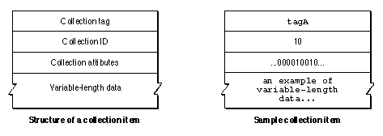

Collection Items
A collection is composed of collection items. Figure 5-2 shows the general structure of a collection item and also shows a sample collection item. Note that, because a collection item is always part of a collection object, you always access the information in a collection item using Collection Manager functions. Therefore, the order of the properties shown in Figure 5-2 is completely arbitrary.Figure 5-2 The collection item

As Figure 5-2 shows, each collection item contains these properties:
The Collection Manager uses a collection item's collection tag and collection ID to uniquely identify the item. As an example, in any collection there can be exactly one item with a collection tag of
- Collection tag. A collection tag is a four-character identifier that, in conjunction with the collection ID, uniquely identifies the collection item.
- Collection ID. A collection ID is a
longvalue that, in conjunction with the collection tag, uniquely identifies the collection item.- Collection attributes. The collection attributes are a set of 32 bit flags, each of which represents an attribute of the collection item. The Collection Manager defines the meaning of some of these attributes and leaves some of them for you to define. See the next section for more information about collection attributes.
- Variable-length data. The variable-length data contains the actual data of the item. This data corresponds to the contents of an item in an array, except items in the same collection can store data of different sizes, whereas items in a single array must all store data of the same size.
'tagA'and a collection ID of 10.When you want to retrieve the data stored in an item, you can specify the item by providing a Collection Manager function with the item's collection tag and collection ID. You can also specify a collection item using one of the other methods provided by the Collection Manager. See "Methods of Identifying Collection Items" beginning on page 5-11 for more information.